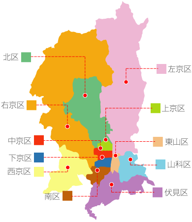

<div class="pcOnly">

<map name="m_map" id="m_map">

<area shape="rect" coords="311,279,384,298" href="/map?s=京都市東山区" alt="京都市東山区">
<area shape="rect" coords="74,204,3,224" href="/map?s=京都市右京区" alt="京都市右京区">
<area shape="rect" coords="89,339,12,359" href="/map?s=京都市西京区" alt="京都市西京区">
<area shape="rect" coords="4,106,63,126" href="kitaku.html" alt="京都市北区"  target="_blank">
<area shape="rect" coords="310,381,381,401" href="fushimi.html" alt="京都市伏見区">
<area shape="rect" coords="317,131,388,150" href="sakyoku.html" alt="京都市左京区" target="_blank">
<area shape="rect" coords="89,310,16,330" href="/map?s=京都市下京区" alt="京都市下京区">
<area shape="rect" coords="305,210,376,230" href="/map?s=京都市上京区" alt="京都市上京区">
<area shape="rect" coords="316,324,387,344" href="/map?s=京都市山科区" alt="京都市山科区">
<area shape="rect" coords="147,387,89,408" href="/map?s=京都市南区" alt="京都市南区">
<area shape="rect" coords="89,275,16,295" href="/map?s=京都市中京区" alt="京都市中京区">

</map>
</div>

